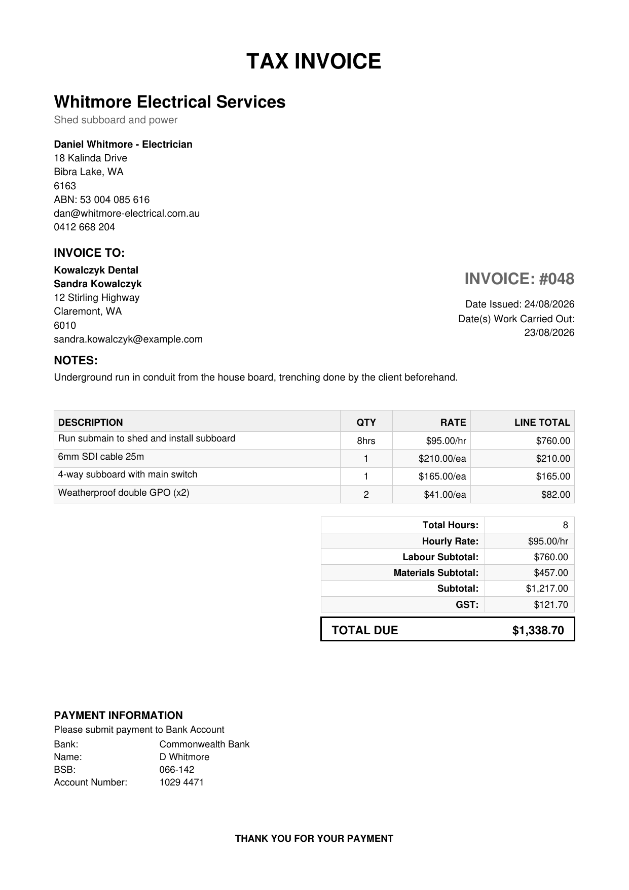
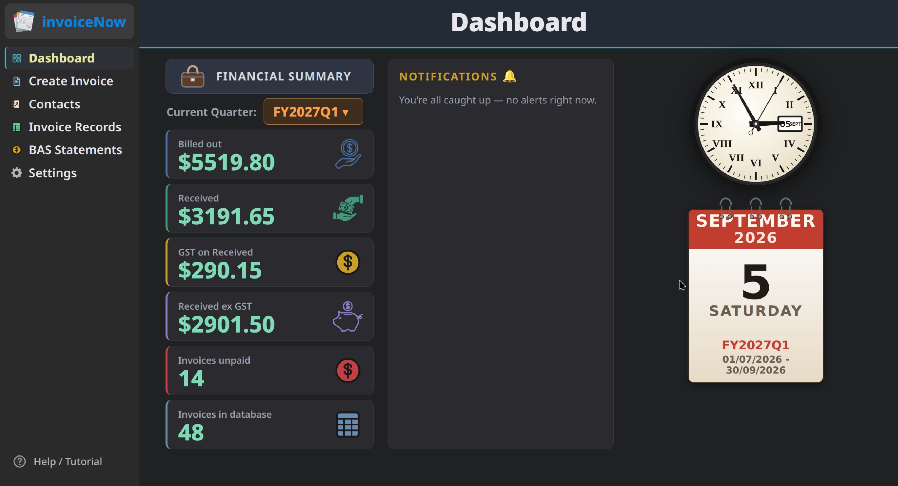
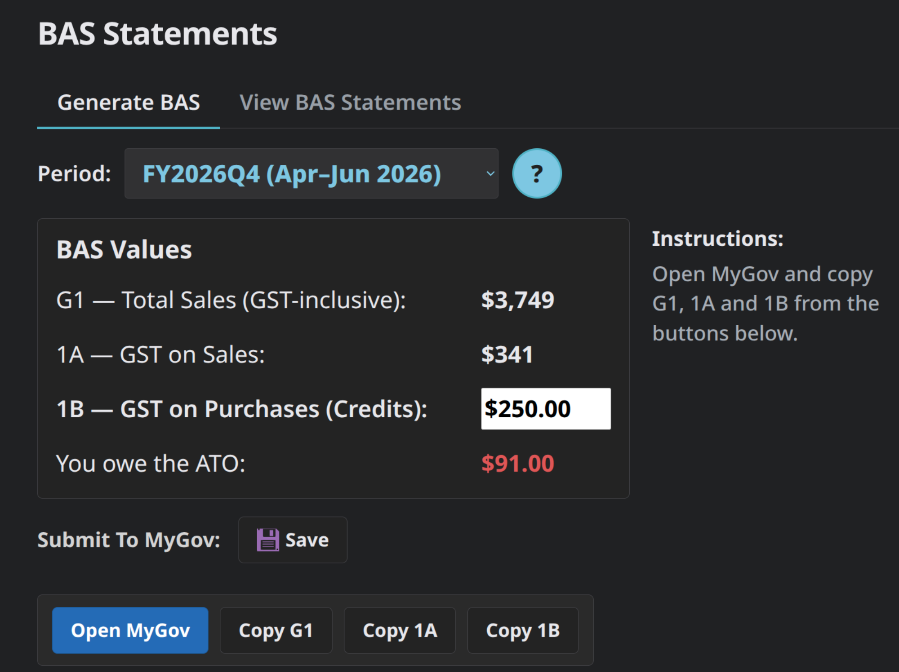
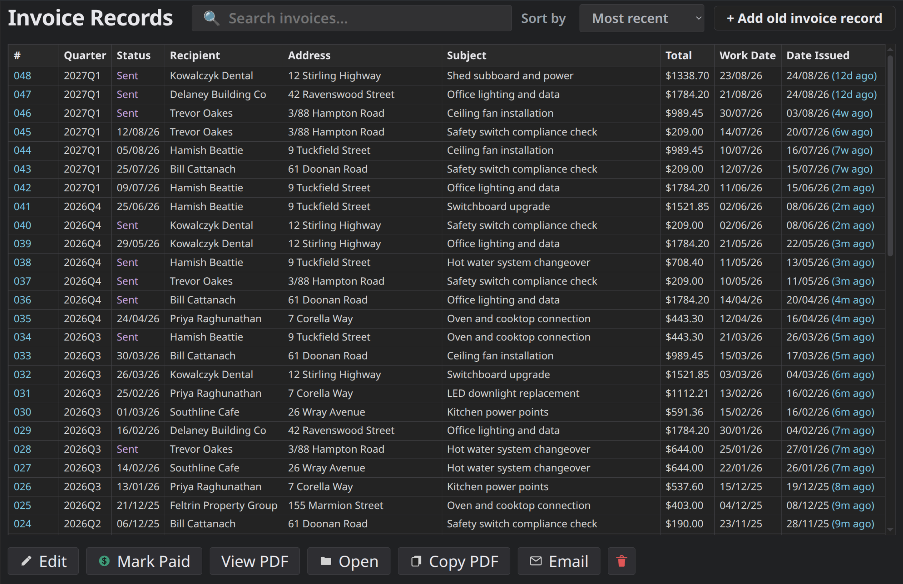

invoiceNow recovers the weeks of your life lost each year managing the friction of invoicing. No more dread, no more putting it off, no more losing an evening to it.
Invoicing now takes a couple of minutes after work, and you always know where you stand. Two entries and you are done: the job and the hours. One more click and the invoice is in the customer's inbox.

Your records are automatically organised to a standard that meets your ATO obligations. As such, any question about your finances is answered in moments, and money you are owed does not quietly go missing.

invoiceNow is free to use indefinitely. Your information stays on your machine, removing the risk of data leaks and downtime.
GST Registered Traders
Quarterly GST is worked out automatically, meaning no quarterly scramble, no weekend lost to it, and no doubt about the figure afterwards.

Your Existing Invoices
There is only ever one place to look, however far back the question goes. Your previous invoices import into the same record.

Reduced Errors
Once a customer's details are saved they autofill on every invoice after that, as do your own. These fields stay correct indefinitely. invoiceNow ensures you do not bill the same job twice by catching duplicate invoices before they are sent.